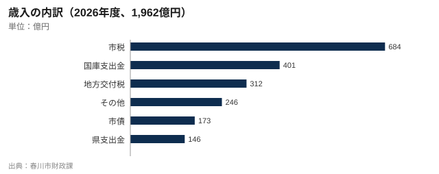

補正予算34億円が成立 排水ポンプ場や避難所の空調、新図書館に重点
春川市議会は30日、一般会計9月補正予算案を賛成32、反対8で可決した。2026年度の一般会計は補正後1,996億円となる。何にいくら使い、財源はどこから来るのか。図書館関係の予算はどう変わったのか。

春川市議会は30日の本会議で、総額34億円の一般会計補正予算案を賛成32、反対8（定数40）で可決した。2026年度（26年4月〜27年3月）の一般会計は補正後で1,996億円となる。11月8日投開票の市長選前、最後の本会議での採決となった。
3月に成立した当初予算は1,962億円で、前年度（1,903億円）比3.1%増と過去最大だった。今回の補正では、治水対策、避難所となる学校体育館、新中央図書館の開館準備、エネルギー価格高騰に苦しむ中小事業者への支援、来週に迫った灯籠まつりの安全対策に予算を追加した。
補正34億円の使い道
最も大きいのは、下川端地区の排水ポンプ場の設計と初年度工事費11億円。同地区は2021年9月に鏡川の水があふれ、住宅1,140戸が浸水した。大雨時に毎秒12立方メートルの水を川へ排出する能力を持ち、2028年度の完成を目指す。ポンプ場は市の事業で、堤防そのものの強化は総事業費86億円のみのり県の事業だ。
また、避難所となる小中学校21校の体育館に、2027年7月までに空調を整備する費用9億円を計上した。昨年8月の避難の際、学校体育館の避難所は室温が35度に達したという。
| 事業 | 金額 | 備考 |
|---|---|---|
| 下川端排水ポンプ場（設計・初年度工事） | 11億円 | 排水能力毎秒12立方メートル、2028年度完成 |
| 避難所となる学校体育館21校の空調整備 | 9億円 | 2027年7月までに設置 |
| 新中央図書館の開館準備（図書・情報システム・移転） | 6億円 | 11月7日開館 |
| 中小事業者向けエネルギー価格支援 | 5億円 | 1事業者あたり最大20万円 |
| 灯籠まつりの安全対策（人流センサー・警備・救護） | 3億円 | 人流センサー実証3,800万円を含む |
| 合計 | 34億円 | 補正後の一般会計は1,996億円 |
出典：春川市財政課
この予算の一つひとつが、2021年以降に市民から問われてきたこと、つまり「水は入ってこないのか」「入ってきたらどこへ逃げればいいのか」への答えだ。
広瀬拓也市長
反対したのは会派「鏡市民ネット」と無所属議員2人。土屋恵美市議は、ポンプ場には賛成だが時期に問題があると述べた。
ポンプ場は必要だ。しかしこれは選挙向けの予算。車を運転できなくなった高齢者への手当ても、同じ日の午後に可決した水道料金値上げを和らげる策も何もない。
鏡市民ネット 土屋恵美市議
何にいくら使うか
歳出で最も大きいのは民生・衛生費で821億円。当初予算の42%を占め、前年度より27億円増えた。高齢者の介護費用の伸びと、市独自の3歳未満児の保育料無償化が主な要因だ。道路・河川・公園などの土木費は11億円増の229億円となった。
伸び率が最も大きいのは文化・スポーツ・図書館で、63億円から84億円へ3分の1増えた。公債費は197億円から192億円に、商工・観光・労働費はコロナ禍の観光クーポン事業の終了で72億円から69億円に減った。
図書館関係は44%増
文化関係の増加分のほとんどは、11月7日に春川中央駅隣に開館する新中央図書館によるものだ。職員の人件費や図書購入費、中央館と6分館の運営費を含む図書館運営費は、25年度の14億2千万円から20億5千万円へ44%増えた。建設費の支払いも19億円から36億円に増える。総工費62億円の最終年度にあたる。
補正予算ではさらに、新しい本の購入、情報システム、旧館（城山）からの蔵書48万冊の移転など開館準備費として6億円を追加した。今年度の図書館関係の支出は計62億5千万円となる。新館の年間運営費は13億1千万円の見込みで、旧館の8億2千万円を大きく上回る。
財源はどこから
市民税や固定資産税などの市税は684億円で、当初予算の34.9%。残りは国や県への依存度が高く、国庫支出金401億円、地方交付税312億円、県支出金146億円となっている。

市債による新たな借り入れは173億円。25年度末の市債残高は2,145億円で、市民41万2,800人で割ると1人あたり51万9,600円になる。「その他」の246億円には、使用料や基金の取り崩しのほか、25年度に寄せられたふるさと納税38億円（返礼品はゆずと春川焼が中心）が含まれる。
水道料金も同日可決
市議会は30日午後、別の採決で水道局の料金改定案を賛成29、反対11で可決した。上下水道料金は2027年4月から平均8.5%上がり、2カ月で20立方メートルを使う2人世帯では5,830円が6,325円になる。
二つの採決は市長選でも争点になりそうだ。3選を目指す広瀬市長に対し、元県議の沢田美智子氏は水道料金値上げの見直しと、70歳以上の市民のハルカ運賃を市の負担で半額にすることを公約に掲げている。


コメント 5
下川端2021
2021年に浸水しました。ポンプ場は3年前に予算化されるべきで、選挙の5週間前ではないはず。それでも、ようやく動き出すのはうれしい。
予算ウォッチャー
市民1人あたり52万円の借金があるのに、図書館の運営に年13億円。人口が減り続ける中で誰が払うのか。
本好き
@予算ウォッチャー 旧館は人口40万の市で180席しかなかった。朝8時から学生が外に並んでいたんです。ぜいたくではありません。
港町の父
体育館の空調がいちばんまともな使い道。去年の8月、両親が港町中に2晩避難したけど、本当に耐えられない暑さだった。
辻K
水道は8.5%、携帯は1割値上げ。それを市議会が自分たちの予算と同じ日に可決。見事なタイミングですね。